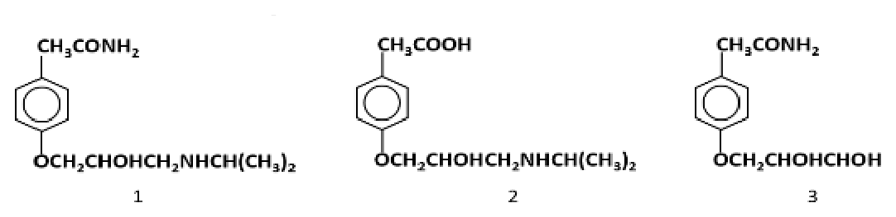

開卷有益 ／
藥師 ／ 藥物分析與生藥學 ／ 112 年第 2 次112 年第 2 次藥師藥物分析與生藥學試題與答案
這一頁是民國 112 年第 2 次藥師藥物分析與生藥學的整份歷屆試題，共 80 題，題目與標準答案出自考選部「國家考試試題及測驗式試題答案」開放資料，其中 78 題附有詳解。以下逐題列出題幹、選項與答案；要計時作答或記錄成績，請用線上練習。
考選部原始場次代碼：112100
線上作答這一科 →
全部 80 題
第 1 題
下列何種溶劑可以用於非水鹼滴定法？
（A） 硝酸（B） 乙酸（C） 吡啶（D） 乙醇答案：（C）
詳解與考點 正解：非水鹼滴定要利用鹼性非水溶媒接受質子，讓弱酸的酸性在溶媒中更容易表現。pyridine 具有鹼性並可作此類滴定的溶媒，故選 C。
A：硝酸是強酸，加入後會直接中和鹼性滴定劑或改變待測物的酸鹼狀態，不是此法所需的鹼性溶媒。
B：乙酸屬酸性非水溶媒，常用於弱鹼的非水酸滴定；酸性溶媒與本題的非水鹼滴定方向相反。
D：乙醇雖可作某些分析中的共溶媒，但其鹼性不足以作為本題用來強化弱酸解離的典型鹼性非水溶媒。
本題考點：非水鹼滴定（nonaqueous alkalimetry）——測定弱酸時，要選能接受質子的鹼性非水溶媒以放大酸鹼反應；溶媒效應（solvent effect）——先判斷溶媒是酸性、鹼性或惰性，再配對待測物與滴定劑的酸鹼方向。
第 2 題
依據中華藥典，以重量分析法進行amobarbital sodium之含量測定時，不需經過下列何步驟？
（A） 酸化（B） 抽提（C） 乾燥（D） 熾灼答案：（D）
詳解與考點 正解：以重量分析法測定 amobarbital sodium 時，須先把鈉鹽酸化為游離型，再經抽提與乾燥取得可稱量的 analyte；熾灼會破壞有機藥物，並非此測定所需步驟，故選 D。
A：酸化可使 amobarbital sodium 轉為較適合進入有機相的游離 amobarbital，是後續分離的前提。
B：抽提用來將游離型 analyte 與水相中的無機鹽等干擾物分開，讓稱量物更接近純品。
C：乾燥可除去抽提後殘留的水分與溶媒；若直接稱量，殘留物會使重量偏高。
本題考點：重量分析（gravimetric analysis）——以最終可分離、可乾燥且組成固定的物質重量回推含量；酸鹼萃取（acid-base extraction）——鹽類先轉為游離型再進有機相時，要把酸化與萃取視為同一段分離邏輯；熾灼（ignition）——只適用於將無機殘渣轉為穩定稱量形式，不能用來保留有機 analyte。
第 3 題 待校
將1 g碳酸鈉（Na2CO3 • H2O）溶於100 mL水中，以酚酞為指示劑，則該溶液呈現何種顏色？
（A） 粉紅色（B） 淺綠色（C） 深藍色（D） 淡黃色答案：（A）
第 4 題
以費氏滴定法（Karl Fischer titration）進行水分含量測定時，費氏試劑中何種成分被氧化？
（A） 碘（B） 二氧化硫（C） 吡啶（D） 甲醇答案：（B）
詳解與考點 正解：Karl Fischer titration 的水分反應是一個氧化還原過程。反應中碘被還原為碘離子，而二氧化硫的硫由較低氧化態被氧化，故被氧化的成分是二氧化硫，故選 B。
A：碘在反應中接受電子而還原為碘離子，扮演氧化劑，不是被氧化者。
C：吡啶提供鹼性環境並形成鹽類以推動反應，不是此氧化還原步驟中改變氧化態的成分。
D：甲醇主要作為溶媒並參與酯化型中間步驟，碳的氧化態不構成本題所問的氧化還原變化。
本題考點：費氏滴定法（Karl Fischer titration）——看到水分測定反應時，先辨認碘由 I2 變為 I− 的還原，再找相對被氧化的二氧化硫；氧化還原判讀（redox analysis）——以元素氧化態升降判定誰失電子、誰得電子，不以試劑名稱或用量判定。
第 5 題
下列何種方法較適合用於水分含量不超過0.5%檢品之含水量測定？
（A） 乾燥減重法（B） 液相層析法（C） 甲苯蒸餾法（D） 費氏（Karl Fischer）測定法答案：（D）
詳解與考點 正解：檢品水分不超過 0.5% 時，需要對微量水分具有高靈敏度且反應專一的方法。Karl Fischer 測定以水分的化學計量反應定量，特別適合低含水量檢品，故選 D。
A：乾燥減重法量到的是加熱後的總失重，揮發性溶媒或其他揮發成分也會被算入，對微量水分不夠專一。
B：液相層析法的主要用途是分離與定量溶質，並非此類低水分檢品的標準直接含水量測定法。
C：甲苯蒸餾法較適合能蒸餾帶出的較大量水分；在微量水分下，收集與讀取的靈敏度較不利。
本題考點：微量水分測定（trace water determination）——水分很低時優先選 Karl Fischer，而不是以總失重代替水分；乾燥減重（loss on drying）——只有在其他揮發物可忽略時，失重才可近似水分；方法選擇（analytical method selection）——先比較目標濃度、專一性與偵測靈敏度，再決定測定法。
第 6 題
pKa可由log Ka = log [H+] + log ([A–]/[HA])計算得到，何時pKa = pH？
（A） [H+] = [HA]（B） [A–] = [HA]（C） [A–] = [H+]（D） [A–]/[HA]趨近於0時答案：（B）
詳解與考點 正解：由 Henderson-Hasselbalch equation 可寫成 pH = pKa + log([A−]/[HA])。當 pH = pKa 時，對數項必為 0，因此 [A−]/[HA] = 1，亦即 [A−] = [HA]，故選 B。
A：[H+] 與 [HA] 相等不是此式要求的條件；pKa = pH 比較的是共軛鹼與未解離酸的比例。
C：[A−] 與 [H+] 的關係沒有固定為相等，兩者同時受酸度、濃度與電荷平衡影響。
D：當 [A−]/[HA] 趨近於 0 時，log([A−]/[HA]) 為負值，表示 pH 低於 pKa，酸型遠多於鹼型。
本題考點：Henderson-Hasselbalch equation——將 pH 與 pKa 比較時，先看 [A−]/[HA] 的比值；半中和點（half-neutralization point）——弱酸滴定至一半當量時酸型與共軛鹼型相等，因此 pH = pKa；緩衝液（buffer）——有效緩衝區的判讀要以酸、鹼兩型是否同時有足量存在為準。
第 7 題
有關中華藥典中熾灼殘渣檢查法之敘述，下列何者錯誤？
（A） 可測定檢品中揮發性物質之含量（B） 可使用瓷器坩堝（C） 一般殘渣量以百分比表示（D） 須確保熾灼過程中沒有火焰產生答案：（A）
詳解與考點 正解：熾灼殘渣檢查法測得的是檢品經熾灼後留下的非揮發性無機殘渣，揮發性或可燃性物質會在過程中逸散或分解，不能用此法測定其含量。因此（A）的敘述錯誤，故選 A。
B：瓷器坩堝可耐受熾灼所需的高溫，適合作為熾灼殘渣檢查的容器，所以此敘述正確。
C：殘渣量通常以殘渣重量相對於原檢品重量的百分比表示，才能比較不同取樣量的結果，所以此敘述正確。
D：熾灼過程應避免出現火焰，讓有機物平穩碳化與灰化，以減少飛散或局部過熱造成的殘渣損失，所以此敘述正確。
本題考點：熾灼殘渣（residue on ignition）——要評估的是不揮發的無機性殘留，不可把加熱前的揮發性成分當成測定對象；重量表示法（gravimetric expression）——殘渣檢查以原檢品重量為分母換算百分比，才能比較規格限度；灰化操作（ashing）——需控制升溫與燃燒狀態，避免樣品飛散使結果偏低。
第 8 題
有關pH值測定法之敘述，下列何者錯誤？
（A） pH值為氫離子濃度之對數值（B） 常用電位測定法測定（C） 指示劑或試紙僅能求得近似值（D） 溶液加入酚酞試液1～2滴後不變色，表示其pH值在8以下答案：（A）
詳解與考點 正解：pH 的嚴格定義是氫離子活度的負常用對數，可寫為 pH = −log aH+；稀溶液時才常以濃度近似。只說氫離子濃度的對數值既漏掉負號，也忽略活度，因此（A）錯誤，故選 A。
B：pH 計以玻璃電極與參考電極量測電位差，再換算 pH，電位測定法是常用方法，所以此敘述正確。
C：指示劑與試紙靠顏色比對，容易受觀察、顏色與溶液性質影響，只能得到近似 pH，所以此敘述正確。
D：酚酞的變色範圍在鹼性側，加入後不顯色代表溶液未進入其明顯顯色區，題列 pH 在 8 以下的判斷正確。
本題考點：pH 定義（pH definition）——遇到嚴格定義時用氫離子活度與負對數，濃度只是稀溶液的近似；電位測定法（potentiometry）——需要較準確 pH 時以電極電位差換算，不以肉眼顏色判定；酸鹼指示劑（acid-base indicator）——指示劑只在其變色範圍附近提供判斷，不能當作精密 pH 讀值。
第 9 題
碘價與脂肪酸的何種性質有關？
（A） 不飽和度（B） 游離度（C） 溶解度（D） 螯合度答案：（A）
詳解與考點 正解：碘價反映脂肪酸碳碳雙鍵可進行加成反應的程度。雙鍵越多，能與碘試劑反應的量越大，因此碘價與不飽和度有關，故選 A。
B：游離脂肪酸的多寡是酸價所要反映的性質，並非以碘加成反應衡量。
C：溶解度受脂肪酸鏈長、溫度與溶媒等因素影響，和碘價所測的雙鍵數目不是同一性質。
D：螯合度描述配位基與金屬離子的結合能力，脂肪酸碘價的反應基礎則是碳碳雙鍵加成。
本題考點：碘價（iodine value）——看到油脂與碘試劑的加成量時，直接判斷不飽和雙鍵多寡；脂質品質指標（lipid quality indices）——酸價評估游離脂肪酸，碘價評估不飽和度，兩者不可互換；加成反應（addition reaction）——含 C=C 的結構才是可消耗碘試劑的反應位點。
第 10 題
下列何者最適合降低固相萃取時的不可逆吸附？
（A） 以水沖提（B） 內標準品之添加（C） 萃取管長度增加（D） 進行系列沖提答案：（D）
詳解與考點 正解：固相萃取出現不可逆吸附時，要讓滯留過強的 analyte 有機會逐步脫附。進行系列沖提可依序改變沖提力、回收不同滯留強度的成分，因而最能降低 analyte 因強吸附而損失的機會，故選 D。
A：以水沖提對疏水性 analyte 的脫附力通常不足，可能只洗去高極性雜質而讓目標物仍留在 sorbent 上。
B：添加內標準品可校正定量過程中的變異，但不會改變 analyte 與 sorbent 間的物理吸附。
C：增加萃取管長度會增加接觸面與滯留路徑，不能解除不可逆吸附，反而可能增加回收率下降的風險。
本題考點：固相萃取（solid-phase extraction）——回收率偏低且懷疑強吸附時，調整沖提強度與步驟比單純加長 sorbent 更直接；系列沖提（serial elution）——以不同沖提力分段脫附，可兼顧分離與回收；內標準法（internal standard method）——內標補償的是量測變異，不是修復前處理造成的實體損失。
第 11 題
依中華藥典通則規定，有關折光率測定之敘述，下列何者錯誤？
（A） 應以儀器所附之標準品校正（B） 光源為汞燈（C） 常用之儀器為阿培氏折射計（D） 經校正後測定之正確度可達理論值± 0.0001答案：（B）
詳解與考點 正解：題幹指定中華藥典的折光率測定通則，判準是標準測定所用的譜線。折光率通常以鈉燈的 D 線為基準，不是汞燈，因此（B）錯誤，故選 B。
A：測定前以儀器所附標準品校正，可確認讀值沒有因稜鏡或儀器狀態產生系統性偏差，所以此敘述正確。
C：阿培氏折射計是常用的折光率測定儀器，能在控制溫度與光源條件下讀取折光率，所以此敘述正確。
D：經適當校正後，測定正確度可達題列的理論值 ± 0.0001，故此敘述不構成錯誤。
本題考點：折光率（refractive index）——讀到藥典折光率時，先連結指定光源與溫度條件，不能把不同光譜儀的光源混用；阿培氏折射計（Abbe refractometer）——量測前要以標準品校正，才能將讀值用於鑑別或品質比較；方法條件控制（method condition control）——折光率受波長與溫度影響，規格比較必須在相同條件下進行。
第 12 題
關於拉曼光譜儀的敘述，下列何者錯誤？
（A） 檢測光路之垂直設計與螢光光譜儀類似（B） 光源之波長為450～800 nm（C） 無法檢測具螢光之物質（D） 可以穿透包裝進行裸錠檢測答案：（C）
詳解與考點 正解：螢光會干擾拉曼散射並可能掩蓋微弱訊號，但不等於具螢光的物質絕對無法檢測；可藉適當激發條件降低干擾。因此（C）把螢光干擾說成完全不能檢測，敘述過度絕對，故選 C。
A：拉曼光譜儀可採與螢光光譜儀相近的垂直檢測光路設計，以收集散射光並降低直接入射光干擾，所以此敘述正確。
B：拉曼分析常以可見光至近紅外區域的雷射作激發光源，題列波長範圍屬常見的激發區域，所以此敘述正確。
D：拉曼光譜具有非破壞性且可穿透部分包裝材料，能用於包裝內裸錠的辨識與檢測，所以此敘述正確。
本題考點：拉曼光譜（Raman spectroscopy）——利用非彈性散射辨識分子振動時，要把拉曼訊號與螢光背景分開判讀；螢光干擾（fluorescence interference）——訊號被干擾不等於分析原理失效，先判斷是否能調整激發或量測條件；穿透式鑑別（through-package identification）——需要非破壞性快速檢驗時，可考慮拉曼對包裝內固體製劑的應用。
第 13 題
下列關於近紅外光（NIR）分析法的敘述，何者錯誤？
（A） NIR光譜儀較傳統紅外光光譜儀便宜（B） 具有良好的穿透特質（C） 可以使用強入射光源（D） 可檢測藥品之多晶形答案：（A）
詳解與考點 正解：近紅外光分析通常需要較強光源、適當偵測器與化學計量校正模型，儀器與方法建置成本一般不會比傳統紅外光光譜儀更低。因此（A）的價格比較錯誤，故選 A。
B：近紅外光的穿透性較佳，可量測較厚的樣品、顆粒或包裝內製劑，所以此敘述正確。
C：近紅外吸收多為較弱的泛頻與組合頻帶，使用較強的入射光源有助於取得可用訊號，所以此敘述正確。
D：近紅外光譜可配合校正模型分辨固態結構差異，能用於藥物多晶形的檢測，所以此敘述正確。
本題考點：近紅外光譜（near-infrared spectroscopy, NIR）——需要快速、非破壞且具穿透性的固體分析時，可優先考慮 NIR；泛頻與組合頻帶（overtones and combination bands）——訊號較弱時要留意光源、偵測器與校正模型對結果的影響；化學計量學（chemometrics）——NIR 判別多晶形或含量時，通常要依賴已建立的校正模型，而非只看單一尖銳吸收峰。
第 14 題
有關原子放射光譜法（AES）在藥物分析之應用敘述，下列何者錯誤？
（A） 檢品溶液黏度較大時，易增強放射光強度（B） 在高溫下測定鉀原子時，會減少放射光強度（C） 不易產生譜線重疊（D） 加入氯化鑭可避免硫酸根及磷酸根之干擾答案：（A）
詳解與考點 正解：原子放射光譜法的訊號強弱與檢品能否有效霧化、被有效帶入火焰或電漿中直接相關；檢品溶液黏度較大時，霧化效率會下降、吸入速率降低，實際上會削弱而非增強放射光強度，這個方向與已知的霧化原理相反，故選 A。
B：鉀原子在高溫下容易發生游離，使基態中性原子的比例下降，對應的放射光強度反而會減少，這是已知的游離干擾現象，敘述正確。
C：原子放射光譜法（AES）因樣品中所有元素於火焰／電漿中同時發射，光譜線數目多，譜線重疊（光譜干擾）問題實際上比原子吸收光譜法（AAS）更明顯，『不易產生譜線重疊』正是 AAS 相對於 AES 的優點；本敘述嚴格而言並不成立，屬本題另一個潛在爭點。但 A 之方向性錯誤更為明確（溶液黏度較大會降低霧化效率、減弱訊號強度，而非增強），故本題答案仍取 A。
D：加入氯化鑭作為釋放劑，可優先與硫酸根、磷酸根結合，避免這些陰離子與待測金屬離子形成穩定化合物而干擾原子化，是分析化學中常見的化學干擾抑制手法，敘述正確。
本題考點：原子放射光譜法的黏度與游離干擾（viscosity and ionization interference in AES）——檢品黏度愈大，霧化效率愈差、訊號愈弱，方向與敘述相反；高溫下易游離的元素（如鹼金屬）會因游離而降低中性原子訊號，這是分析時須留意的基體效應；加入釋放劑（如氯化鑭）抑制陰離子干擾是標準對策之一。
第 15 題
下列何者的核自旋量子數（nuclear spin quantum number）是零？
（A） 1H（B） 2H（C） 16O（D） 15N答案：（C）
詳解與考點 正解：核自旋量子數為零通常出現在質子數與中子數皆為偶數的核種，核子配對後不留下淨自旋。¹⁶O 有 8 個質子與 8 個中子，符合此條件，故選 C。
A：¹H 的核自旋量子數為 1/2，具有 NMR 活性，不是零。
B：²H 的核自旋量子數為 1，屬有核自旋的核種，不是零。
D：¹⁵N 的核自旋量子數為 1/2，可進行 NMR 偵測，不是零。
本題考點：核自旋（nuclear spin）——判斷 NMR 可見性時，先看核種的核自旋量子數是否為零；偶偶核（even-even nucleus）——質子與中子皆為偶數時，核子常成對而使 I = 0；NMR 活性（NMR activity）——只有 I ≠ 0 的核種才能在外加磁場下產生可量測的核磁共振訊號。
第 16 題
關於定量核磁共振（qNMR）分析法的應用敘述，下列何者錯誤？
（A） 對製劑中低含量成分亦具高靈敏度（B） 通常透過測定藥物中特定氫訊號與內部標準品比較（C） 成分含量與訊號積分面積成正比（D） 不需對照標準品亦可以測定藥品的純度答案：（A）
詳解與考點 正解：qNMR 雖可準確定量主成分，但其靈敏度受訊號雜訊比與量測時間限制，製劑中的低含量成分未必能得到足夠訊號。因此（A）宣稱對低含量成分亦具高靈敏度，敘述錯誤，故選 A。
B：qNMR 通常選擇不重疊的特定氫訊號，與內部標準品的訊號積分比較來定量，所以此敘述正確。
C：在充分鬆弛與合適脈衝條件下，訊號積分面積與產生該訊號的核數及成分莫耳量成正比，所以此敘述正確。
D：qNMR 的優點是可不使用待測藥物本身的對照標準品來測定純度；量值仍由內部標準品建立，所以此敘述正確。
本題考點：定量核磁共振（quantitative NMR, qNMR）——定量前要確認訊號不重疊、充分鬆弛且積分範圍正確；訊號雜訊比（signal-to-noise ratio）——低含量 analyte 的限制先看能否取得足夠 S/N，不把定量準確度誤當高靈敏度；內部標準法（internal standard method）——qNMR 可免除待測物專屬對照品，但仍須有可追溯的內部標準作比較。
第 17 題
下列何者為五元雜環pyrrole之鄰位（ortho）質子的偶合常數範圍？
（A） 2～4 Hz（B） 7～9 Hz（C） 10～12 Hz（D） 13～18 Hz答案：（A）
詳解與考點 正解：五元雜環 pyrrole 的鄰位質子為相鄰質子間的三鍵偶合，受環內幾何與雜原子電子效應影響，偶合常數通常較苯環鄰位小，範圍為 2–4 Hz，故選 A。
B：7–9 Hz 較接近苯環芳香質子的典型鄰位偶合，不能直接套用到 pyrrole 五元環。
C：10–12 Hz 明顯大於 pyrrole 鄰位質子的常見範圍，不符合本題所問的雜環偶合。
D：13–18 Hz 更常見於較大的烯類 trans 偶合範圍，遠大於 pyrrole 鄰位質子的偶合常數。
本題考點：偶合常數（coupling constant）——判讀 NMR 時要用 J 值辨識相鄰、間位或長程偶合；pyrrole 質子偶合（pyrrole proton coupling）——五元雜環的鄰位 J 值不能直接沿用苯環的 7–9 Hz；結構與 J 值（structure–coupling relationship）——環大小、鍵角與電子環境改變時，先重新評估偶合常數範圍。
第 18 題
某化合物具一個三取代的苯環基團，其氫核磁共振譜（400 MHz）呈現之芳香氫訊號為δ 6.84 (1H, d, J = 8.8 Hz)、7.55 (1H, dd, J = 8.8, 1.6 Hz)與7.56 (1H, d, J = 1.6 Hz) ppm，試判斷此三個芳香氫之偶合系統屬於下列何 者？
（A） ABX（B） AMX（C） ABC（D） A2X答案：（A）
詳解與考點 正解：三個芳香氫中，一個呈 d，J = 8.8 Hz；一個呈 dd，J = 8.8, 1.6 Hz；另一個呈 d，J = 1.6 Hz。這顯示一組相鄰質子的大偶合及一組間位質子的小偶合，帶有兩種偶合的質子是連結點，構成三取代苯環常見的 ABX 偶合系統，故選 A。
B：AMX 也可用於三個非等價質子的系統，因而看似相近；但本題題列的大、小 J 值連結與芳香氫訊號形式，依偶合系統判讀歸為 ABX，而不是 AMX。
C：ABC 只表示三個彼此區分的自旋標記，未能對應本題由一個鄰位大偶合與一個間位小偶合構成的典型 ABX 關係。
D：A2X 必須有兩個化學等價的質子形成積分為 2H 的 A2 部分；本題三個芳香氫皆各為 1H，沒有等價質子對。
本題考點：芳香氫偶合（aromatic proton coupling）——先以 J 值分出鄰位的大偶合與間位的小偶合，再畫出三個氫的連結；自旋系統（spin system）——遇到三取代苯環的 d、dd、d 組合時，先檢查是否符合 ABX 的大、小偶合網絡；訊號積分（signal integration）——A2X 的必要條件是有一組等價 2H 訊號，三個獨立 1H 訊號可先排除該型。
第 19 題
有關基質輔助雷射脫附游離法（matrix assisted laser desorption ionization, MALDI）的敘述，下列何者錯誤？
（A） 基質須為可吸收UV能量的化合物（B） 適合串聯四極柱質譜儀（quadrupole mass）進行蛋白質研究（C） 屬於軟性離子源（D） 可搭配影像技術，應用於藥物的組織分布研究答案：（B）
詳解與考點 正解：關鍵在 MALDI 的游離節奏與常用質譜分析器的搭配。MALDI 以雷射脈衝使含基質檢品脫附、游離，最常見的蛋白質質譜組合為 MALDI-TOF；串聯四極柱通常搭配可連續導入液相流出物的 ESI，不是 MALDI 的典型蛋白質分析搭配，故選 B。
A：基質必須有效吸收雷射的 UV 能量，才可把能量傳給分析物並促進脫附與游離，敘述正確。
C：MALDI 產生的分子離子碎裂較少，適合量測大分子量與易碎裂分子，屬軟性離子源，敘述正確。
D：MALDI imaging 可在組織切片上量測不同座標的質譜訊號，因此可用於研究藥物及代謝物的組織分布，敘述正確。
本題考點：基質輔助雷射脫附游離（matrix assisted laser desorption ionization，MALDI）——看到基質吸收雷射、蛋白質或組織切片時，優先連結脈衝式 MALDI-TOF；電噴灑游離（electrospray ionization，ESI）——若題幹是 HPLC 連線與串聯四極柱定量，判斷典型游離法時選 ESI；軟性游離（soft ionization）——以分子離子保留與碎裂少判斷，而不是以分析物大小單獨判斷。
第 20 題
某化合物測得之比旋光度為–13，但文獻參考數據為+20。下列何者為最可能造成此差異的因素？
（A） 於不同實驗室進行檢測（B） 使用之貯液槽長度不同（C） 使用之溶媒種類不同（D） 使用之樣品濃度不同答案：（C）
詳解與考點 正解：比旋光度已將觀測旋光角的光程與濃度正規化，可寫為 [α] = α/(l × c)。在測定條件正確時，改變溶媒卻可能改變溶質的溶媒化狀態或構形，使比旋光度與文獻值不同，甚至旋光方向改變，故選 C。
A：在相同溫度、波長、溶媒與測定條件下，實驗室所在地不會改變同一化合物的比旋光度；差異應回到實際量測條件判斷。
B：貯液槽長度會改變原始觀測旋光角 α，但計算比旋光度時已除以光程 l，不會造成已校正數值的差異。
D：樣品濃度會改變原始旋光角 α，但比旋光度公式已除以濃度 c；在適當濃度範圍內，濃度不同不是此種差異的主因。
本題考點：比旋光度（specific rotation）——比較文獻值前，要先確認溫度、波長、溶媒與濃度定義一致；旋光度正規化（optical rotation normalization）——光程與濃度只影響原始旋光角，計算 [α] 時須一併校正；溶媒效應（solvent effect）——旋光性化合物在不同溶媒中的溶媒化或構形改變時，不可直接把數值視為相同。
第 21 題
關於UV-Vis spectroscopy的敘述，下列何者錯誤？
（A） UV區段光源為deuterium lamp（B） 可見光區段光源為xenon lamp（C） 測定時波長須校正（D） 解析度與光閘寬度（slit width）有關答案：（B）
詳解與考點 正解：本題依常規 UV-Vis 分區光源判別。UV 區段以 deuterium lamp 為典型光源，可見光區段的標準搭配是 tungsten 或 tungsten-halogen lamp；xenon lamp 雖可發出寬波段光，並非此一常規分區的可見光典型光源，故選 B。
A：deuterium lamp 在 UV 區可提供連續光譜，適合作為紫外光量測的光源，敘述正確。
C：波長刻度若偏移，吸收峰位置與定量選定波長都可能失準，因此測定前或依程序進行波長校正是必要條件，敘述正確。
D：slit width 會決定通過的波長帶寬；光閘愈窄通常解析度愈佳但光通量較低，因此解析度與光閘寬度有關，敘述正確。
本題考點：UV-Vis 光源（UV-Vis light sources）——按波段配對時，UV 優先判 deuterium lamp、可見光優先判 tungsten-halogen lamp；波長校正（wavelength calibration）——只要題目涉及吸收峰位置或指定測定波長，就要先排除波長刻度誤差；光譜解析度（spectral resolution）——以 slit width 控制帶寬，窄光閘換取較佳解析度。
第 22 題
有關利用游離法進行分析之敘述，下列何者錯誤？
（A） 常壓化學游離（APCI）法適用於低極性藥物分析（B） 脫附電噴灑游離（DESI）法適用於物質表面研究（C） 基質輔助雷射脫附游離（MALDI）法適於連結HPLC進行分析（D） 電子撞擊（EI）法適於連結GC進行分析答案：（C）
詳解與考點 正解：關鍵在游離法是否能和連續流出的 HPLC 相容。MALDI 通常把檢品與基質點在靶板上，以脈衝雷射離線游離，典型搭配為 TOF；可直接承接 HPLC 流出液的常用游離法是 ESI，不是 MALDI，故選 C。
A：APCI 對較低極性、可揮發或可氣化的分析物具有良好適用性，敘述正確。
B：DESI 以帶電噴霧撞擊表面後收集二次液滴中的離子，可直接分析物質表面並延伸至化學影像研究，敘述正確。
D：EI 先將氣相分子受電子撞擊而游離，適合 GC 分離後的揮發性分析物，敘述正確。
本題考點：液相串聯游離（LC-MS ionization）——題幹出現 HPLC 連線時，優先判斷 ESI 這類連續導入相容的游離法；基質輔助雷射脫附游離（matrix assisted laser desorption ionization，MALDI）——看到靶板、基質與雷射脈衝時，判為離線式 MALDI-TOF；電子撞擊游離（electron impact ionization，EI）——氣相與揮發性分子是其和 GC 配對的必要線索。
第 23 題
下列何者為電子撞擊（electron impact, EI）游離法最常用的加速電壓？
（A） 20 eV（B） 45 eV（C） 95 eV（D） 70 eV答案：（D）
詳解與考點 正解：電子撞擊游離的質譜資料常以 70 eV 作為標準化電子能量，這個條件能提供穩定且可與資料庫比較的碎片圖譜，故選 D。
A、B、C：20 eV、45 eV 與 95 eV 都不是 EI 質譜圖最常用的標準電子能量。電子能量改變會改變游離效率與碎裂比例，因此不能和 70 eV 的常規圖譜直接等同。
本題考點：電子撞擊游離（electron impact ionization，EI）——題幹詢問 EI 的常規操作能量時，以 70 eV 作為標準答案；碎裂圖譜（mass fragmentation pattern）——比較 EI 圖譜時，先確認電子能量一致，因為能量不同會改變碎片相對強度。
第 24 題
有關影響螢光強度因素之敘述，下列何者錯誤？
（A） 檢品濃度與螢光強度測定無關（B） 黏度較高溶劑會增強螢光強度（C） 溶液中的氯或溴離子會降低螢光（D） 分析物可能與溶液中其他分子形成錯合物而影響螢光強度答案：（A）
詳解與考點 正解：螢光強度並非與檢品濃度無關；在低濃度的線性範圍內可近似 F = kC，濃度升高也可能進一步出現內濾效應或猝滅，因此（A）的無關敘述錯誤，故選 A。
B：較高黏度會限制分子碰撞與非輻射去活化途徑，常使螢光訊號增強，敘述正確。
C：溶液中的 Cl- 或 Br- 可造成外部重原子效應與猝滅，使螢光強度降低，敘述正確。
D：分析物與其他分子形成錯合物時，電子結構、剛性或猝滅途徑都可能改變，因此螢光強度可受影響，敘述正確。
本題考點：螢光濃度關係（fluorescence-concentration relationship）——先在低濃度線性區判 F 與 C 的正比關係，高濃度時再考慮內濾效應；螢光猝滅（fluorescence quenching）——出現鹵離子、碰撞或可形成錯合物的分子時，判斷是否增加非輻射去活化；溶劑黏度效應（viscosity effect）——分子內運動受限時，通常較有利於保留螢光放射。
第 25 題
利用光譜分析法鑑別檢品與標準品之差異，下列作法何者錯誤？
（A） 比對二至三個最大吸收處的吸光度比值是否相符（UV/Vis）（B） 比對其比吸光度是否相符（UV/Vis）（C） 比對紫外光／可見光全光譜（D） 比對紅外光譜2000～4000 cm-1的吸收帶答案：（D）
詳解與考點 正解：紅外光譜用於鑑別時，最有區辨力的是低波數的指紋區，而非只比較 2000-4000 cm-1 的官能基吸收區。後者可能只顯示共同官能基，不能充分鑑別檢品與標準品，因此（D）的作法錯誤，故選 D。
A：同一物質在相同條件下，二至三個吸收極大處的吸光度比值具有可比較性，可作為 UV/Vis 鑑別的依據之一，敘述正確。
B：比吸光度反映特定條件下的吸收能力，與標準品比對時可協助確認檢品是否相符，敘述正確。
C：比對完整 UV/Vis 光譜可同時檢視吸收峰位置與整體光譜形狀，較單一波長更有利於鑑別，敘述正確。
本題考點：紅外光譜鑑別（infrared spectral identification）——要區分結構相近物時，重視指紋區的整體吸收帶而非只看官能基區；紫外可見光譜鑑別（UV/Vis spectral identification）——以吸收峰位置、全光譜形狀與特徵吸光度比值交叉判斷；比吸光度（specific absorbance）——比對前要讓溶媒、波長與量測條件一致，才可作為鑑別依據。
第 26 題
下列化合物中，何者在紫外光－可見光區無明顯吸收？
（A） CH2=CHCH=CH2（B） CH3CH2CH3（C） CH2=CHCOCH3（D） CH2=CHCH=CHNO2答案：（B）
詳解與考點 正解：一般 UV-Vis 區的明顯吸收需要可發生較低能量電子躍遷的 chromophore。CH3CH2CH3 只有 σ 鍵，其 σ→σ* 躍遷位於遠紫外區，在一般 UV-Vis 測定範圍沒有明顯吸收，故選 B。
A：CH2=CHCH=CH2 含共軛雙鍵，可發生 π→π* 躍遷而在紫外區吸收，不能列為無明顯吸收者。
C：CH2=CHCOCH3 具有 α，β-不飽和羰基的共軛系統，羰基與雙鍵都可提供紫外吸收，不能列為無明顯吸收者。
D：CH2=CHCH=CHNO2 具有共軛雙鍵與 nitro group，電子躍遷能量落入較易量測的紫外區，不能列為無明顯吸收者。
本題考點：發色基（chromophore）——先找 π 鍵、羰基、硝基或共軛系統，存在時通常有 UV-Vis 吸收；共軛效應（conjugation）——共軛延長會降低躍遷能隙，使吸收較容易落入一般紫外可見光量測範圍；σ→σ* 躍遷——只有飽和 σ 鍵的烴類多在遠紫外吸收，常視為一般 UV-Vis 區無明顯吸收。
第 27 題
以高效液相層析法分析 amylbenzene、propylbenzene及toluene的混合物，若以C18管柱為固定相，甲醇和水的 混合溶液為移動相，則下列敘述何者錯誤？
（A） 增加移動相中的甲醇含量會降低此三者的capacity factor（K'）（B） 提升層析管柱的溫度，會使capacity factor（K'）降低（C） 移動相中加入0.1% 的乙酸，此三者的capacity factor（K'）幾乎不變（D） 滯留時間由長到短依序為 toluene、propylbenzene、amylbenzene答案：（D）
詳解與考點 正解：C18 管柱配甲醇／水是逆相層析條件，分析物愈疏水，和非極性固定相的作用愈強、滯留愈久。三者由長到短應為 amylbenzene、propylbenzene、toluene，不是（D）所列次序，故選 D。
A：增加甲醇含量會提高逆相移動相的沖提力，使三種中性芳香族化合物較早洗脫，capacity factor K' 會降低，敘述正確。
B：升高管柱溫度通常會降低分析物在固定相的分配與滯留，因此 capacity factor K' 下降，敘述正確。
C：三種分析物皆為中性烴類，加入 0.1% 乙酸不會引發其酸鹼離子化，capacity factor K' 因此幾乎不變，敘述正確。
本題考點：逆相層析（reversed-phase chromatography）——固定相為 C18 時，以疏水性較高者滯留較久排序；沖提力（elution strength）——逆相移動相增加有機溶媒比例時，預期 K' 與滯留時間下降；酸鹼離子化（acid-base ionization）——調整移動相酸度前，先判斷分析物是否具有可離子化官能基。
第 28 題
下列有關親水性交互反應層析法（hydrophilic interaction liquid chromatography, HILIC）之敘述，何者正確？
（A） 其分離機制與逆相層析類似（B） 極性較高的化合物較不易滯留（C） 移動相的水含量愈多，化合物愈慢被沖提出來（D） 強酸性或強鹼性化合物皆有可能發生離子交換的反應答案：（D）
詳解與考點 正解：HILIC 使用極性固定相與高有機溶媒移動相，除分配作用外，帶電分析物也可能和固定相發生離子交換。強酸性或強鹼性化合物在適當條件下可帶電，皆可能出現此作用，故選 D。
A：HILIC 的主要保留環境是極性固定相表面的富水層，分離邏輯不等同於以疏水固定相為主的逆相層析，敘述錯誤。
B：在 HILIC 中，極性較高的化合物通常較容易進入富水層而有較強保留，不是較不易滯留，敘述錯誤。
C：移動相水含量增加會削弱 HILIC 的保留，化合物通常較快洗脫，不是愈慢被沖提出來，敘述錯誤。
本題考點：親水性交互反應層析（hydrophilic interaction liquid chromatography，HILIC）——看到極性固定相與高有機溶媒時，以極性分析物較強保留判斷；水含量效應（water-content effect）——HILIC 增加移動相水含量時，通常預期滯留下降；離子交換（ion exchange）——分析物可帶電且固定相具可作用基團時，要把離子交換納入保留機制。
第 29 題
利用正電壓模式之毛細管區帶電泳法分析atenolol（1，下圖1）及其不純物blocker acid（2，下圖2）和 diol（3，下圖3），背景電解質pH = 9.7，其遷移之先後順序何者正確？

（A） 1 2 3（B） 3 1 2（C） 3 2 1（D） 1 3 2答案：（D）
詳解與考點 正解：三個化合物在 pH 9.7 的背景電解質下，帶電狀態決定了在正電壓毛細管區帶電泳中的遷移先後。atenolol（1）保留了 isopropylamino 側鏈的鹼性二級胺，在此 pH 下部分質子化而帶正電，順著電滲流方向再疊加自身正向電泳遷移，最先通過偵測點；diol（3）的側鏈末端為單純的雙羥基，不具可解離的鹼性或酸性官能基，呈中性、僅隨電滲流移動，遷移速度居中；blocker acid（2）在保留鹼性側鏈的同時，苯環上的乙醯胺被水解為羧酸（CH3COOH），於 pH 9.7 下已解離帶負電，逆著電滲流方向移動而最晚抵達，故遷移順序為 1、3、2，選 D。
A：此順序將 diol（3）排在最前，但 diol 不具鹼性側鏈以外的額外正電來源，帶電程度不會超過保留完整鹼性胺基的 atenolol，順序不合。
B：此順序把 blocker acid（2）排在最前，但其羧酸官能基在 pH 9.7 下已解離帶負電，逆電滲流方向移動，不可能比中性或帶正電的化合物更早抵達。
C：此順序把 atenolol（1）排在最後，但 atenolol 唯一的解離基是鹼性二級胺，於此 pH 下仍偏向質子化帶正電，理應最早而非最晚遷移。
本題考點：毛細管區帶電泳中電荷與遷移順序的關係（CZE migration order）——正電壓模式下，陽離子最先、中性分子居中、陰離子最晚通過偵測點；官能基解離狀態隨背景電解質 pH 改變（酸性基團在鹼性 pH 下解離帶負電，鹼性基團視 pKa 部分質子化）。
第 30 題
電子捕獲偵測器對下列何種化合物的靈敏度最低？
（A） C6H5NO2（B） CH3CH2CH2Br（C） CH3CH2CH2CF3（D） CH3CH2CH2CH2CH2CH3答案：（D）
詳解與考點 正解：電子捕獲偵測器以捕獲電子能力偵測分析物，對含強吸電子官能基或鹵素的化合物特別靈敏。CH3CH2CH2CH2CH2CH3 是不含鹵素或強吸電子基的飽和烴，電子親和力最低，故選 D。
A、B、C：C6H5NO2 含 nitro group、CH3CH2CH2Br 含 Br、CH3CH2CH2CF3 含 CF3，皆具有可提升電子捕獲反應的吸電子結構，對電子捕獲偵測器的靈敏度不會最低。
本題考點：電子捕獲偵測器（electron capture detector，ECD）——先找鹵素、硝基或其他強吸電子基，存在時通常有較高回應；電子親和力（electron affinity）——比較 ECD 靈敏度時，缺乏吸電子結構的飽和烴優先判為低回應。
第 31 題
有關用於氣相層析之充填管柱與毛細管柱比較，下列何者正確？
（A） 充填管柱的HETP較小，效率較高（B） 兩者均可使用不銹鋼做為管柱材質（C） 充填管柱的阻力較小（D） 毛細管柱之樣品承載量較小答案：（D）
詳解與考點 正解：毛細管柱內徑小、固定相液膜薄，能負荷的樣品量有限；充填管柱具有較大的樣品承載量，因此（D）正確，故選 D。惟就材質而言，市售亦有不銹鋼等金屬材質的開管式毛細管柱，（B）並非全然不能成立，本題係以標準教材的管柱比較為判準，故仍取（D）為單一最佳答案。
A：毛細管柱為開管式結構，通常有較小的 HETP 與較高的分離效率；充填管柱不是 HETP 較小的一方，敘述錯誤。
B：充填管柱常用不銹鋼，毛細管柱則以熔融石英為典型材質；惟市售亦有不銹鋼等金屬材質的開管式毛細管柱，不能單以材質可能性判定本項為錯，只是它未反映標準教材所要比較的常規差異，在四個敘述中不是本題所取的最佳答案。
C：充填管柱內的填料會增加流動阻力；相較開管式毛細管柱，不能把充填管柱判為阻力較小，敘述錯誤。
本題考點：毛細管柱（capillary column）——以小內徑、低 HETP、高效率與低樣品承載量成組判斷；充填管柱（packed column）——看到填料時，要同時想到較大承載量與填料造成的流動阻力；理論板高（height equivalent to a theoretical plate，HETP）——在相同分離條件下，HETP 較小代表管柱效率較高。
第 32 題
對於高效液相層析法（HPLC）的描述，下列何者錯誤？
（A） 固定相充填劑的粒徑愈小，分離效果愈佳（B） 層析管柱長度變為2倍，則滯留時間約變為2倍（C） 流速相同時，減小層析管柱內徑可提高分離效果（D） 固定相粒徑愈大，分離的最佳線性流速（linear velocity）愈低答案：（C）
詳解與考點 正解：在相同體積流速下，減小管柱內徑會使線性流速上升，不會必然提高分離效果；若線性流速偏離最佳值，反而可能使理論板高增加。因此（C）把內徑變小直接等同於分離變佳，敘述錯誤，故選 C。
A：固定相粒徑變小可降低帶展寬並提升理論板數，雖會提高系統壓力，分離效果通常較佳，敘述正確。
B：其他條件相同時，管柱長度增加為 2 倍會使分析物通過固定相的路徑約為 2 倍，滯留時間約隨之變為 2 倍，敘述正確。
D：依 van Deemter 關係，粒徑較大時傳質阻力項較大，最佳線性流速較低，敘述正確。
本題考點：線性流速（linear velocity）——固定體積流速下，內徑減小會提高線性流速，須再判斷是否接近最佳值；van Deemter equation——比較粒徑與流速時，以理論板高最小的最佳流速判斷，不把高流速直接當作高解析度；粒徑效應（particle-size effect）——粒徑變小通常提升效率，但同時提高背壓。
第 33 題
關於精密度（precision）與準確度（accuracy）的敘述，下列何者錯誤？
（A） 精密度高，未必準確度高（B） 準確度高，未必精密度高（C） 儀器經校正無誤，實驗結果必準確（D） 擊發後靶上的彈孔集中在紅心，為兼具高精密度與準確度答案：（C）
詳解與考點 正解：儀器校正無誤只處理儀器本身的一部分系統誤差，樣品前處理、取樣、基質干擾與方法偏差仍可使結果偏離真值。因此（C）的「必準確」過度推論，敘述錯誤，故選 C。
A：精密度高表示重複量測彼此接近，若同時有固定偏差，結果仍可能集中特定錯誤位置而不準確，敘述正確。
B：準確度高著重結果接近真值，單次或平均結果可接近真值，但重複量測的離散程度仍可能較大，敘述正確。
D：靶上彈孔集中且位於紅心同時表示重複結果集中與接近目標，分別對應高精密度與高準確度，敘述正確。
本題考點：精密度（precision）——看重複測定值彼此是否集中，不能由集中程度直接推論真值正確；準確度（accuracy）——看結果與真值的接近程度，必須連同取樣與方法偏差一起評估；系統誤差（systematic error）——儀器校正只是其中一環，若前處理或基質仍有偏差，準確度不會自動成立。
第 34 題
Ketoprofen於同為25 cm長之3支管柱進行分析，在管柱1～3之滯留時間分別為10、5和5 min，波峰寬分別為 1、0.25和1 min，則下列何者之分離效率（efficiency）> 10000 plates/m？
（A） 僅管柱3（B） 僅管柱2（C） 僅管柱1（D） 管柱1及管柱2答案：（B）
詳解與考點 正解：題目給的是滯留時間 tR 與波峰寬 W，先用 N = 16(tR/W)^2 計算理論板數，再以 N/L 比較每公尺效率。三支管柱皆為 L = 25 cm = 0.25 m。管柱1：N = 16 × (10 min/1 min)^2 = 1,600 plates，N/L = 1,600 plates/0.25 m = 6,400 plates/m。管柱2：N = 16 × (5 min/0.25 min)^2 = 6,400 plates，N/L = 6,400 plates/0.25 m = 25,600 plates/m。管柱3：N = 16 × (5 min/1 min)^2 = 400 plates，N/L = 400 plates/0.25 m = 1,600 plates/m。只有管柱2大於 10,000 plates/m，故選 B。
A：管柱3的效率為 1,600 plates/m，未達 10,000 plates/m；反而管柱2為 25,600 plates/m，故「僅管柱3」錯誤。
C：管柱1的效率為 6,400 plates/m，未達門檻；符合條件的是管柱2，不是「僅管柱1」。
D：管柱2確實為 25,600 plates/m，但管柱1僅為 6,400 plates/m；把管柱1併入即違反大於 10,000 plates/m 的條件。
本題考點：理論板數（theoretical plate number，N）——已知滯留時間與波峰基線寬時，先以 N = 16(tR/W)^2 取得效率基礎；每單位長度效率（plates per meter）——管柱長度相同或不同都要以 N/L 換算後再比較；波峰寬（peak width）——在相同滯留時間下，波峰愈窄，N 愈大。
第 35 題
下列何者為滯留體積VR（retention volume）之計算公式？（ Vs：管柱內靜止相實質體積，VM：管柱內空隙體 積，K：分析物在靜止相／移動相之分配係數）
（A） VR = VM + Vs（B） VR = VM + K Vs（C） VR = K VM + Vs（D） VR = K VM －Vs答案：（B）
詳解與考點 正解：滯留體積由管柱空隙中的移動相體積，加上分析物分配至靜止相所折算的體積組成。K = Cs/Cm，因此靜止相貢獻為 K × Vs，得到 VR = VM + K × Vs，故選 B。
A：VR = VM + Vs 只把兩相實質體積相加，未反映分析物在兩相間的分配係數 K，敘述錯誤。
C：VR = K × VM + Vs 把 K 乘在移動相體積 VM 上，與 K 所代表的靜止相／移動相濃度比不相符，敘述錯誤。
D：VR = K × VM - Vs 除了將 K 配到錯誤體積外，還以負號扣除靜止相貢獻，與分配增加會增加滯留的方向相反，敘述錯誤。
本題考點：滯留體積（retention volume，VR）——用 VR = VM + K × Vs 分開判斷空隙體積與靜止相分配貢獻；分配係數（partition coefficient，K）——K 定義為靜止相濃度相對移動相濃度，K 增加時滯留應增加；相體積判讀（phase-volume accounting）——公式中的 K 必須乘在靜止相體積 Vs，不可與 VM 對調。
第 36 題
下列何者可用於檢測不具發色基（chromophore）的分析物？
（A） diode array detector（B） fluorescence detector（C） evaporative light scattering detector（D） UV/Vis detector答案：（C）
詳解與考點 正解：evaporative light scattering detector 先將流出液霧化、蒸發移動相，再量測非揮發性分析物粒子散射的光；偵測原理不依賴分析物本身的 chromophore，故選 C。
A：diode array detector 屬 UV/Vis 吸收偵測器，分析物仍須在量測波段具有吸收，沒有 chromophore 時不適合作為直接偵測方法。
B：fluorescence detector 需要分析物本身具螢光特性，或先經衍生化導入螢光基，沒有 chromophore 的分析物不能直接以此選項偵測。
D：UV/Vis detector 依分析物吸收紫外光或可見光而偵測，缺乏 chromophore 時訊號不足，不能直接適用。
本題考點：蒸發光散射偵測器（evaporative light scattering detector，ELSD）——分析物非揮發且缺乏發色基時，可用霧化與粒子散射訊號偵測；紫外可見光偵測（UV/Vis detection）——直接量測前先確認分析物有可吸收的 chromophore；螢光偵測（fluorescence detection）——無天然螢光時，要判斷是否可經衍生化後再偵測。
第 37 題
相較於液相－液相分配萃取法，下列何者非固相萃取法之優點？
（A） 較易多批次同時進行（B） 無乳化現象（C） 使用溶劑量較少（D） 適用於微量檢品本題送分，無標準答案
詳解與考點 本題經考選部公告一律給分。題目問固相萃取法（SPE）「非」其優點者，惟(A)易多批次同時進行、(B)無乳化現象、(C)使用溶劑量較少、(D)適用微量檢品，四者在分析化學教材中皆被列為SPE相對於液相─液相分配萃取的典型優點，找不出一項明確「不是優點」的敘述，導致無單一正確答案可選。四個選項彼此難以區分優劣次序，故送分。作答以現行藥物分析學固相萃取法教材為準。
第 38 題
以逆相層析分析具離子化特性之待測物，於動相中加入離子對試劑時，下列敘述何者錯誤？
（A） 可增加解析度（B） 以靜電力形成離子對（C） 離子對試劑的低極性端與固定相，以凡得瓦力相互作用（D） 分析物的滯留時間變短答案：（D）
詳解與考點 正解：逆相離子對層析中，帶電分析物與離子對試劑先以靜電力形成離子對，試劑的低極性端再和固定相作用，使分析物表觀上更疏水、滯留通常增加。因此（D）的滯留時間變短敘述錯誤，故選 D。
A：離子對試劑可改變帶電分析物的保留與彼此選擇性，適當條件下能提高解析度，敘述正確。
B：離子對的形成核心是帶相反電荷物種間的靜電力，敘述正確。
C：離子對試劑的低極性端可與逆相固定相發生凡得瓦力等疏水作用，形成有利保留的環境，敘述正確。
本題考點：離子對層析（ion-pair chromatography）——逆相條件下看到帶電分析物與離子對試劑時，先判斷是否提高表觀疏水性與滯留；靜電力（electrostatic interaction）——離子對必須由相反電荷間的作用形成，不能和疏水吸附混為同一步；逆相滯留（reversed-phase retention）——分析物或其離子對愈能和非極性固定相作用，通常滯留時間愈長。
第 39 題
某抗生素之最低抑菌濃度（MIC）為10 μg/mL，當血中濃度高於50 μg/mL時有肝毒性之疑慮。若欲使用HPLC 監測其療效濃度時，下列測試濃度範圍何者最恰當？
（A） 0.01～10000 μg/mL（B） 0.1～1000 μg/mL（C） 1～100 μg/mL（D） 20～50 μg/mL答案：（C）
詳解與考點 正解：有效濃度窗由 MIC 10 μg/mL 至肝毒性疑慮的 50 μg/mL 決定；HPLC 校正範圍應完整涵蓋待監測濃度，並在兩端保留可量測的餘裕。1～100 μg/mL 同時涵蓋低於 MIC、治療區間及毒性警戒值，適合建立療效濃度監測的校正曲線，故選 C。
A：0.01～10000 μg/mL 跨越 6 個數量級，遠超出臨床所需的 10～50 μg/mL。校正範圍不宜為了涵蓋極端濃度而犧牲目標區間的解析度與驗證效率。
B：0.1～1000 μg/mL 雖含目標濃度，但範圍仍過寬。分辨關鍵是是否以實際治療窗為中心設計，而非只要形式上涵蓋即可。
D：20～50 μg/mL 未涵蓋 10 μg/mL 的最低抑菌濃度，也沒有低端緩衝；若檢體落在起效門檻附近，便無法完整評估是否達效。
本題考點：分析方法定量範圍（analytical range）——校正濃度須包住預期檢體濃度與臨床決策邊界；治療藥物濃度監測（therapeutic drug monitoring）——同時用療效下限與毒性上限設定可用監測窗；高效液相層析（HPLC）——方法驗證要聚焦實際用途的濃度區間，而不是任意拉寬範圍。
第 40 題
用陽離子交換層析法分析選項之胺基酸時，若將動相的pH值緩緩提升，則最後沖提出者為何？
（A） glutamic acid（C5H9NO4）（B） leucine（C6H13NO2）（C） threonine（C4H9NO3）（D） lysine（C6H14N2O2）答案：（D）
詳解與考點 正解：陽離子交換樹脂固定負電荷，會保留帶正電較多的胺基酸。逐步提高動相 pH 時，胺基酸依其等電點失去正電、降低與樹脂的靜電作用；等電點最高的 lysine 要到較高 pH 才顯著降低正電，最後沖提，故選 D。
A：glutamic acid 有額外的羧基，等電點最低；pH 上升後最早失去淨正電並脫離陽離子交換樹脂，不會最後沖提。
B：leucine 為中性胺基酸，其等電點遠低於 lysine。它在較低 pH 即已大幅減少與樹脂的正電吸附，沖提順序在 lysine 之前。
C：threonine 同為中性胺基酸，等電點不及 lysine。判斷保留強弱時看淨正電與等電點，不是看分子式中的氧原子數。
本題考點：陽離子交換層析（cation-exchange chromatography）——固定相帶負電時，淨正電越高的分析物保留越強；等電點（isoelectric point, pI）——以升高 pH 洗脫胺基酸時，pI 較高者較晚失去正電而較晚沖提；胺基酸電荷狀態（amino acid ionization）——先判 pH 相對 pI 的位置，再判與離子交換樹脂的作用方向。
第 41 題
有關salicylic acid之敘述，下列何者正確？
（A） 僅存在柳屬（Salix sp.）植物（B） 為salicyl alcohol glucoside之同物異名（C） 具抗發炎、鎮痛及解熱效果，不會引起口腔、食道、胃之刺激（D） 可用於製備aspirin，aspirin命名之語源來自acetyl spiric acid答案：（D）
詳解與考點 正解：salicylic acid 可經乙醯化製備 aspirin；藥名 aspirin 的語源即連結 acetyl spiric acid，符合題目所述的製備關係與命名來源，故選 D。
A：salicylic acid 並非僅存在於柳屬植物。柳屬是重要來源之一，但其他含 salicylate 的植物也可見相關成分，不能用「僅」字限縮。
B：salicyl alcohol glucoside 指的是 salicin，不是 salicylic acid。兩者的差異在於前者是醇的葡萄糖苷，後者是游離羧酸。
C：salicylic acid 雖具鎮痛、解熱及抗發炎相關作用，但對口腔、食道與胃黏膜具有刺激性。看似符合 salicylate 的藥理作用，錯在把其黏膜刺激風險排除了。
本題考點：水楊酸類（salicylates）——判斷衍生物時先分辨游離 salicylic acid 與其醇苷 salicin；乙醯化（acetylation）——遇到 aspirin 的製備關係時，辨認 salicylic acid 的酚羥基被乙醯化；生藥命名來源（pharmacognostic nomenclature）——名稱可提示原植物或前驅化合物，但不能取代結構判讀。
第 42 題
下列何者係抽提自褐海藻（brown seaweeds, Macrocystis pyrifera）？
（A） agar（B） algin（C） carrageenan（D） tragacanth答案：（B）
詳解與考點 正解：Macrocystis pyrifera 為褐海藻，其細胞壁可取得 algin，亦常以 alginate 形式應用；因此以藻類來源分類時，褐藻對應 algin，故選 B。
A：agar 的主要來源是紅藻，例如 Gelidium 或 Gracilaria，不是褐海藻。兩者都可作為親水性膠體，誘答處在用途相近而來源藻類不同。
C：carrageenan 亦取自紅藻，常見來源為 Irish moss 等。其與 algin 的分界在於前者是紅藻硫酸化多醣，後者是褐藻多醣。
D：tragacanth 是黃蓍屬植物分泌的乾燥膠質，不屬於海藻抽提物。
本題考點：海藻膠（algal hydrocolloids）——先依紅藻或褐藻分類，再連結其代表性多醣；algin/alginate——看到 Macrocystis 等褐海藻時選 algin；植物膠（plant gums）——tragacanth 等陸生植物分泌膠要與海藻多醣分開判斷。
第 43 題
下列何種醣苷（glycoside）屬於cyanogenic glycoside？
（A） amygdalin（B） arbutin（C） salicin（D） sinalbin答案：（A）
詳解與考點 正解：cyanogenic glycoside 的辨認重點是水解後能形成氫氰酸相關產物。amygdalin 為苦杏仁中的氰苷，經酵素水解可產生 benzaldehyde 與氫氰酸，故選 A。
B：arbutin 是 hydroquinone 的醣苷，水解後對應的是 hydroquinone，不屬於會釋出氫氰酸的 cyanogenic glycoside。
C：salicin 是 salicyl alcohol 的醣苷，屬於 salicylate 相關成分；其苷元結構不含可形成氰化物的 nitrile 基。
D：sinalbin 是芥子油苷類（glucosinolate），經 myrosinase 水解與 isothiocyanate 生成有關。它看似也屬可水解的植物醣苷，但水解產物類型不同於氰苷。
本題考點：氰苷（cyanogenic glycosides）——看到 amygdalin 時以水解可釋出氫氰酸作為判準；醣苷水解產物——先追溯苷元的官能基，再區分 cyanogenic glycoside、phenolic glycoside 與 glucosinolate；苦杏仁苷（amygdalin）——與 benzaldehyde 及氫氰酸形成的組合連結判斷。
第 44 題
Mangiferin屬於下列何種類型醣苷？
（A） O-glycoside（B） C-glycoside（C） N-glycoside（D） S-glycoside答案：（B）
詳解與考點 正解：Mangiferin 的葡萄糖基直接以碳原子與 xanthone 骨架相連，屬於 C-glycoside；判斷時看醣基與苷元之間的原子連接位置，而不是只看是否含氧，故選 B。
A：O-glycoside 的醣基經氧原子連接苷元，酸水解相對較容易切斷；Mangiferin 的鍵結不是此種 C-O-C 形式。
C：N-glycoside 是醣基經氮原子連接，例如某些核苷類結構，與 Mangiferin 的直接碳原子連接不符。
D：S-glycoside 以硫原子作為醣苷鍵結位點，常見於含硫化合物；Mangiferin 不具這類連接方式。
本題考點：碳苷（C-glycoside）——醣基直接接在苷元碳原子時選 C-glycoside；醣苷鍵結分類（glycosidic linkage）——以連接原子為 O、C、N 或 S 判別類型；酸水解穩定性——C-C 鍵通常比 O-glycosidic bond 更不易被酸切斷。
第 45 題
有關K-strophanthoside與ouabain之敘述，下列何者錯誤？
（A） 兩者水解後均會釋放葡萄糖（B） 兩者的非醣基部分皆屬於cardenolide（C） 後者可注射使用（D） 後者的基原植物為Strophanthus gratus答案：（A）
詳解與考點 正解：本題要求找出錯誤敘述。K-strophanthoside 水解可釋放葡萄糖，但 ouabain 所含醣基為 L-rhamnose，不能說兩者水解後均釋放葡萄糖，故選 A。
B：K-strophanthoside 與 ouabain 的非醣基部分皆為 cardenolide。兩者均具有強心配醣體常見的不飽和內酯環骨架，因此此敘述正確，非答案。
C：ouabain 可製成注射劑使用，符合其作為強心配醣體的臨床給藥特性；此敘述沒有把給藥途徑與其他強心苷混淆。
D：ouabain 的基原植物為 Strophanthus gratus。生藥來源與其所含強心配醣體相符，故此敘述正確，非答案。
本題考點：強心配醣體（cardiac glycosides）——先拆成醣基與苷元，再判斷水解後的糖種類；cardenolide——辨認含不飽和五員內酯環的強心苷苷元；ouabain——遇到其來源與給藥途徑時，要連結 Strophanthus gratus 與注射製劑。
第 46 題
下列何種蒽菎類配醣體（anthraquinone glycosides）之醣基只接在碳原子上？
（A） frangulin A（B） aloin B（C） glucofrangulin A（D） cascaroside D答案：（B）
詳解與考點 正解：「醣基只接在碳原子上」是 C-glycoside 的描述。aloin B 為 anthrone 類 C-glycoside，葡萄糖基直接接在苷元碳原子上，故選 B。
A：frangulin A 是以氧原子連接醣基的 anthraquinone O-glycoside，不符合醣基只接在碳原子的條件。
C：glucofrangulin A 同樣屬 O-glycoside。分辨關鍵在醣基連接的原子，不在名稱是否帶有 gluco-。
D：cascaroside D 的醣苷鍵不僅是單一的碳原子連接，不能歸為題目所稱醣基只接在碳原子的化合物。
本題考點：蒽醌類配醣體（anthraquinone glycosides）——先判醣基連接於氧或碳，再區分 O-glycoside 與 C-glycoside；aloin B——遇到蘆薈蒽酮類成分時，辨認其為 C-glycoside；C-glycosidic bond——題目出現「只接在碳原子」時，以直接 C-C 鍵作為判準。
第 47 題
補骨脂所含之psoralen屬於下列何類成分？
（A） monoterpenoid phenol（B） flavonoid（C） furocoumarin（D） chalcone答案：（C）
詳解與考點 正解：補骨脂所含 psoralen 的骨架由 coumarin 與 furan 環融合而成，屬 furocoumarin；因此要以結構母核分類，而不是依植物名稱猜測成分，故選 C。
A：monoterpenoid phenol 是單萜衍生的酚類，例如具萜類碳骨架的揮發性成分；psoralen 的核心不是單萜酚。
B：flavonoid 通常以 C6-C3-C6 骨架為辨識基礎，與 psoralen 的稠合 furan-coumarin 骨架不同。
D：chalcone 為開鏈的 flavonoid 前驅骨架，具有兩個芳環由三碳鏈相連的特徵；psoralen 並非此開鏈結構。
本題考點：呋喃香豆素（furocoumarins）——看到 coumarin 與 furan 稠合骨架時選 furocoumarin；psoralen——連結補骨脂與光敏性 furocoumarin 類成分；天然物骨架分類（natural-product scaffold classification）——以環系與連接方式判類，不以藥材名稱或用途代替結構判讀。
第 48 題
黑芥子苷（sinigrin）經myrosinase水解後產生的苷元為：
（A） allyl isothiocyanate（B） benzaldehyde（C） p-hydroxybenzyl isothiocyanate（D） mandelonitrile答案：（A）
詳解與考點 正解：sinigrin 是黑芥子中的 glucosinolate。經 myrosinase 去除醣基後，形成不穩定中間體並重排為芥子油成分 allyl isothiocyanate，故選 A。
B：benzaldehyde 是 amygdalin 等 cyanogenic glycoside 水解時的特徵產物，並非 sinigrin 的 allyl 側鏈所形成的產物。
C：p-hydroxybenzyl isothiocyanate 與白芥子苷 sinalbin 的水解關係較密切。兩者看似都是芥子油苷水解物，差異在苷元的側鏈取代基。
D：mandelonitrile 是 cyanogenic glycoside 水解過程的 cyanohydrin 中間體，與 glucosinolate 的 myrosinase 水解路徑不同。
本題考點：芥子油苷（glucosinolates）——遇到 sinigrin 與 myrosinase 時，追蹤到 allyl isothiocyanate；myrosinase hydrolysis——先辨認底物為 glucosinolate，再判產物為 isothiocyanate 類；氰苷與芥子油苷鑑別——前者導向 cyanohydrin 或氫氰酸，後者導向 isothiocyanate。
第 49 題
下列何者為黃蠟（yellow wax）精製成白蠟（white wax）所使用的方法之一？
（A） 氫化（B） 加熱（C） 陽光曝曬（D） 水解答案：（C）
詳解與考點 正解：黃蠟精製為白蠟的目的在於去除天然色澤，傳統方法之一為陽光曝曬進行漂白，使造成黃色的色素經光氧化而減少，故選 C。
A：氫化主要改變不飽和鍵與物性，不是黃蠟製白蠟時用來去除色素的標準漂白步驟。
B：加熱可使蠟熔化以利處理，卻不能單靠升溫選擇性消除造成黃色的色素。
D：水解會破壞蠟酯的酯鍵，改變原有蠟質組成；精製白蠟要處理的是色澤，不是將蠟酯分解。
本題考點：蜂蠟精製（beeswax bleaching）——要把 yellow wax 轉為 white wax 時，選擇去色而非改變主成分的處理；光氧化漂白（photooxidative bleaching）——陽光曝曬可降低天然色素造成的黃澤；蠟酯（wax esters）——遇到水解時要判斷是否會拆解脂肪酸與高級醇的酯鍵。
第 50 題
下列脂肪酸中，何者存在於海魚且具有抗血小板凝集作用？
（A） 16：1（ω7）（B） 20：1（ω9）（C） 20：1（ω11）（D） 20：5（ω3）答案：（D）
詳解與考點 正解：海魚中具抗血小板凝集作用的代表性 ω-3 多元不飽和脂肪酸為 eicosapentaenoic acid，縮寫 EPA，記作 20:5（ω-3）。EPA 可改變 eicosanoid 生成，使血小板凝集傾向下降，故選 D。
A、B、C：16:1（ω-7）、20:1（ω-9）與 20:1（ω-11）皆只有 1 個雙鍵，均不是 EPA 所代表的 20:5（ω-3）脂肪酸。分辨關鍵在碳數、雙鍵數與 ω 系列必須同時相符，不能只因為是海魚脂肪酸就視為正解。
本題考點：EPA（eicosapentaenoic acid）——看到海魚、抗血小板凝集與 20:5（ω-3）時直接連結 EPA；ω-3 多元不飽和脂肪酸（omega-3 polyunsaturated fatty acids）——判斷時同時核對碳數、雙鍵數與第一個雙鍵相對甲基端的位置；eicosanoid pathway——需判凝集傾向時，辨認 EPA 與 arachidonic acid 代謝競爭的方向。
第 51 題
下列有關北美聖草（eriodictyon）之敘述，何者錯誤？
（A） 藥用部位為葉部（B） 具祛痰作用（C） 基原植物為Eriodictyon officinale（D） 可為quinine的矯味劑答案：（C）
詳解與考點 正解：本題為負向題，北美聖草的基原植物應為 Eriodictyon californicum，並非 Eriodictyon officinale；因此選項中的基原植物配對錯誤，故選 C。
A：北美聖草的藥用部位為葉部，葉材乾燥後作為生藥使用，此敘述正確，非答案。
B：北美聖草具有祛痰用途，與其作為呼吸道相關生藥的傳統應用相符，故此敘述正確，非答案。
D：北美聖草可用作 quinine 的矯味劑。此用途著重改善藥物味道，並不表示其本身就是 quinine 的來源。
本題考點：北美聖草（eriodictyon/yerba santa）——遇到基原、藥用部位與用途的組合時，連結 Eriodictyon californicum、葉部及祛痰；生藥基原鑑別（botanical source identification）——學名相近時要逐字核對屬名與種小名；矯味劑（flavoring agent）——可改善苦味的生藥不等於產生該苦味藥物的來源。
第 52 題
下列生藥活性成分之化學結構，何者不含內酯基（lactone）？
（A） ginkgolide A（B） forskolin（C） artemisinin（D） parthenolide答案：（B）
詳解與考點 正解：內酯基是分子內酯化形成的環狀酯。forskolin 雖有含氧取代基與酯基，但不具有內酯環；不能把所有酯基都當作 lactone，故選 B。
A：ginkgolide A 為 diterpene trilactone，具有多個內酯環，因此含有 lactone。
C：artemisinin 是含有 endoperoxide 的 sesquiterpene lactone；過氧橋是其重要特徵，但不會排除其內酯結構。
D：parthenolide 為 sesquiterpene lactone，名稱所屬的化學類別本身即指出具有內酯環。
本題考點：內酯（lactone）——判斷時找羥基與羧基分子內成環的酯鍵，而非只看有無氧原子；forskolin——辨認其含酯基但不含 lactone ring 的結構特徵；萜類內酯（terpene lactones）——ginkgolide、artemisinin 與 parthenolide 等名稱要連結其內酯骨架。
第 53 題
下列何種中藥方劑不含茯苓？
（A） 六味地黃丸（B） 四君子湯（C） 五苓散（D） 麻黃湯答案：（D）
詳解與考點 正解：麻黃湯的基本組成為麻黃、桂枝、杏仁與甘草，不含茯苓；其餘三方均以茯苓作為方中藥材之一，故選 D。
A：六味地黃丸含熟地黃、山茱萸、山藥、澤瀉、牡丹皮與茯苓，茯苓是其六味組成之一，故非答案。
B：四君子湯由人參、白朮、茯苓與甘草組成，茯苓屬核心藥材，故此敘述不符合題目所問。
C：五苓散含澤瀉、豬苓、茯苓、白朮與桂枝；名稱雖含「苓」，仍要以完整組方核對，並非只有一味苓類藥材。
本題考點：麻黃湯（Mahuang Decoction）——遇到方劑組成題時，以麻黃、桂枝、杏仁、甘草四味辨認；六味地黃丸、四君子湯與五苓散——判斷是否含茯苓時應逐方列出核心藥材，不憑方名猜測；方劑組成（formula composition）——以完整藥味組合做排除，避免將用途相近的方劑混為一談。
第 54 題
下列生藥基原植物及其活性成分之配對，何者錯誤？
（A） Melilotus officinalis－dicumarol（B） Silybum marianum－silybin（C） Podophyllum peltatum－etoposide（D） Echinacea angustifolia－chicoric acid答案：（C）
詳解與考點 正解：Podophyllum peltatum 的天然活性成分是 podophyllotoxin；etoposide 則是以 podophyllotoxin 為母核製得的半合成抗癌藥，不能列為該基原植物直接所含的活性成分，故選 C。
A：Melilotus officinalis 與 dicumarol 的生藥配對成立；dicumarol 是與甜苜蓿 coumarin 衍生物相關的抗凝血成分，故非答案。
B：Silybum marianum 的代表性成分為 silybin，屬 milk thistle 的 flavonolignan 成分，配對正確。
D：Echinacea angustifolia 可見 chicoric acid，該配對符合其常考的酚酸類活性成分，故此敘述正確，非答案。
本題考點：podophyllotoxin——辨認其為 Podophyllum 的天然 lignan 成分；半合成藥物（semisynthetic drugs）——由天然物衍生而來不等於原植物直接含有該藥物；生藥基原與活性成分配對（botanical source-constituent pairing）——先區分天然成分、代謝產物與半合成衍生物，再判配對正誤。
第 55 題
下列何者生藥成分對類風濕性關節炎（rheumatoid arthritis）之疼痛具緩解作用，且屬於abridged phenylpropanoid類？
（A） capsaicin（B） rutin（C） methoxsalen（D） silybin答案：（A）
詳解與考點 正解：capsaicin 為 abridged phenylpropanoid，具有局部鎮痛作用；其作用於 TRPV1 後可使痛覺傳遞去敏化，能用於緩解類風濕性關節炎相關疼痛，故選 A。
B：rutin 是 flavonoid glycoside，不是 abridged phenylpropanoid。它雖也是植物酚類成分，但骨架分類與題目要求不同。
C：methoxsalen 屬 furocoumarin，常以其光敏化結構特性辨認；不能因同樣含芳香環就歸入 abridged phenylpropanoid。
D：silybin 為 flavanolignan，是 milk thistle 的代表性成分，與 capsaicin 的 phenylpropanoid 衍生骨架不同。
本題考點：capsaicin——遇到局部鎮痛、TRPV1 與 abridged phenylpropanoid 的組合時選 capsaicin；abridged phenylpropanoids——判斷天然物類別時依縮短的 phenylpropanoid 骨架，而非只看是否為植物酚；TRPV1 desensitization——局部反覆刺激後出現痛覺傳遞降低時，可用來理解 capsaicin 的鎮痛效果。
第 56 題
下列有關lignans之敘述，何者正確？
（A） etoposide屬於neolignan（B） 可由二分子coniferyl alcohol聚合而得（C） podophyllotoxin之內酯（lactone）屬於cis型（D） etoposide之C(4')-OH基對抗癌活性並不重要答案：（B）
詳解與考點 正解：lignans 的典型生合成來自兩個 phenylpropanoid 單體氧化偶聯；coniferyl alcohol 正是常用來說明此來源的單體，因此二分子 coniferyl alcohol 聚合可形成 lignan，故選 B。
A：etoposide 為 podophyllotoxin 衍生的 lignan 類半合成抗癌藥，不屬 neolignan。兩者都源自 phenylpropanoid，誘答處在名稱相近而碳骨架連接方式不同。
C：podophyllotoxin 的內酯為 trans 型，不是 cis 型；立體化學改變會影響此類 lignan 衍生物的結構與活性判讀。
D：etoposide 的 C(4')-OH 基對抗癌活性重要，不能視為可任意刪除而不影響作用的取代基。
本題考點：木脂素（lignans）——看到兩個 C6-C3 phenylpropanoid 單體偶聯時，優先判為 lignan；coniferyl alcohol——可作為 lignan 生合成前驅物的辨識錨點；etoposide 與 podophyllotoxin——判斷時區分天然 lignan 母核、半合成衍生物與 neolignan 的連接型態。
第 57 題 待校
下列何者是Sumatra benzoin的主要成分？
答案：（A）
第 58 題
下列何種生藥可用於抑制愛滋病治療之噁心嘔吐，而有促進食慾之作用？
（A） opium（B） coca（C） marihuana（D） khat答案：（C）
詳解與考點 正解：marihuana 的 cannabinoid 成分具有止吐與促進食慾作用，可用於愛滋病相關治療情境中的噁心、嘔吐與食慾不振處置，故選 C。
A：opium 的主要 alkaloids 為 opioid 類，較常帶來噁心、嘔吐、便祕與依賴等問題，不是本題所述的促進食慾止吐生藥。
B：coca 的主要成分與中樞興奮作用相關，並非以抑制噁心嘔吐及促進食慾為辨識用途。
D：khat 所含 cathinone 具有興奮劑特性，與 cannabinoid 的止吐及食慾刺激作用機轉不同。
本題考點：大麻（marihuana）——看到 cannabinoid、止吐與促進食慾的組合時連結 marihuana；cannabinoids——判斷天然物臨床用途時，區分止吐與食慾刺激作用，不與 opioid 或 stimulant 混淆；生藥中樞作用（CNS-active crude drugs）——先按主要活性成分的 pharmacologic class 判別用途。
第 59 題
Pilocarpine具下列何種結構？
（A） lactone、imidazole（B） lactone、indole（C） lactam、imidazole（D） lactam、indole答案：（A）
詳解與考點 正解：Pilocarpine 為 imidazole alkaloid，分子內同時具有 imidazole 環與 lactone 環；lactone 是環狀酯，不是含氮醯胺環，故選 A。
B：indole 需具苯環與 pyrrole 稠合的雙環系，Pilocarpine 不具此 indole 骨架；其含氮五員環是 imidazole。
C：lactam 是環狀醯胺，環內必有醯胺氮；Pilocarpine 的酯環不含此 lactam 結構。
D：此組合同時把 imidazole 誤作 indole、把 lactone 誤作 lactam，兩個結構判讀皆不符。
本題考點：Pilocarpine——看到縮瞳性 imidazole alkaloid 時，連結 imidazole 與 lactone 兩個結構單元；內酯與內醯胺（lactone vs lactam）——先看環內酯鍵或醯胺氮，再判為 lactone 或 lactam；indole 與 imidazole——以環系組成鑑別，不能只因兩者皆含氮而互換。
第 60 題
Catharanthine具下列何種骨架？
（A） ibogane（B） aspidospermane（C） morphinan（D） corynane答案：（A）
詳解與考點 正解：Catharanthine 的單萜吲哚生物鹼骨架屬 ibogane 型。分類時要看其特有的環系，而不是只看它同樣來自夾竹桃科或同屬吲哚生物鹼；Catharanthine 對應的正是 ibogane，故選 A。
B：aspidospermane 也是單萜吲哚生物鹼常見的骨架類型，與（A）同屬的結構來源相近，因而容易混淆；但 Catharanthine 的環系不歸入 aspidospermane。
C：morphinan 是以 morphine 類為代表的骨架，屬異喹啉生物鹼衍生的結構系統，與 Catharanthine 的 ibogane 骨架不同。
D：corynane 為另一類單萜吲哚生物鹼骨架；同樣具有吲哚生合成背景不等於環系相同，不能據此歸類為 Catharanthine。
本題考點：單萜吲哚生物鹼骨架（monoterpene indole alkaloid skeleton）——遇到同科植物的生物鹼時，應以碳環重排後的骨架名稱分類，不以植物來源代替結構判定；ibogane 骨架——辨識 Catharanthine 時，直接將其配對為 ibogane，而非其他單萜吲哚生物鹼環系。
第 61 題
下列生物鹼，何者不屬於tropine之衍生物？
（A） hyoscyamine（B） atropine（C） scopolamine（D） hygroline答案：（D）
詳解與考點 正解：本題以 tropine 所屬的 tropane 骨架為分界。Hygroline 不具此骨架，屬於不同類型的生物鹼；其名稱雖與 tropine 類藥物同為含氮天然物，不能據此視為 tropine 衍生物，故選 D。
A：hyoscyamine 是 tropine 與 tropic acid 形成的酯，保有 tropane 骨架，屬 tropine 衍生物。
B：atropine 為 hyoscyamine 的外消旋形式，同樣是 tropine 類酯，故仍在本題所指的衍生物範圍。
C：scopolamine 的醇性部分為 scopine，是帶環氧橋的 tropane 系衍生結構；與（D）的非 tropane 類骨架不同，因此不是答案。
本題考點：tropane alkaloids——判斷是否為 tropine 衍生物時，先找 tropane 環系及其與有機酸形成的酯，不以藥名是否相似判斷；hyoscyamine 與 atropine——兩者在立體化學形式不同，但骨架分類同屬 tropine 類。
第 62 題
下列生藥基原植物與主要作用之配對，何者正確？
（A） Papaver somniferum－鎮痛（B） Rauvolfia serpentina－縮瞳（C） Pausinystalia yohimbe－降壓（D） Strychnos castelnaei－降血糖答案：（A）
詳解與考點 正解：判斷基原植物與主要作用的配對時，Papaver somniferum 所產生的 opium alkaloids 是最明確的線索，其中 morphine 具有鎮痛作用，因此（A）配對正確，故選 A。
B：Rauvolfia serpentina 的代表性生物鹼為 reserpine，主要用於降血壓及鎮靜相關作用；縮瞳不是此植物的主要作用配對。
C：Pausinystalia yohimbe 所含 yohimbine 為 α2-adrenoceptor antagonist，可增強交感神經活性，不能配對為降壓。其名稱容易與降壓生物鹼同列而混淆，分辨關鍵在受體阻斷後的生理方向。
D：Strychnos castelnaei 與箭毒類植物來源相關，代表的是神經肌肉阻斷用途，而非降血糖作用。
本題考點：Papaver somniferum 與 morphine——遇到罌粟的基原題，鎮痛應由 morphine 連結判斷；yohimbine 的受體作用（α2-adrenoceptor antagonism）——阻斷突觸前 α2 受體會提升去甲腎上腺素作用，不能直接歸為降壓；生藥基原與主要作用——同為生物鹼植物時，需以代表性成分的主要藥理作用配對。
第 63 題
下列何種胺基酸為骨骼肌鬆弛劑d-tubocurarine的生合成前驅物（precursor）？
（A） anthranilic acid（B） histidine（C） lysine（D） tyrosine答案：（D）
詳解與考點 正解：d-tubocurarine 是 bisbenzylisoquinoline alkaloid，其生合成由 tyrosine 衍生的芳香族前驅物組成。先從骨架中的兩個 benzylisoquinoline 單元回推胺基酸來源，即可判定前驅物為 tyrosine，故選 D。
A：anthranilic acid 常作為 anthranilate 或部分 quinoline 類天然物的生合成前驅物，不能生成 d-tubocurarine 的 bisbenzylisoquinoline 骨架。
B：histidine 的含氮環為 imidazole，適合用於 imidazole 類生物鹼的來源判定，與本題的 isoquinoline 結構不符。
C：lysine 常與 piperidine、quinolizidine 類生物鹼的生合成相關；其碳氮骨架走向不同於由 tyrosine 建構的 d-tubocurarine。
本題考點：bisbenzylisoquinoline alkaloids——看到雙 benzylisoquinoline 骨架時，應回推 tyrosine 衍生路徑；胺基酸生合成前驅物（biosynthetic precursor）——先由目標分子的含氮環與芳香環類型辨識骨架，再配對其典型胺基酸來源。
第 64 題
下列含咖啡因之生藥與其基原植物科別之配對，何者正確？
（A） coffee－Rubiaceae（B） paraguay tea－Sterculiaceae（C） cola－Sapindaceae（D） tea－Aquifoliaceae答案：（A）
詳解與考點 正解：含 caffeine 的 coffee 來自 Coffea 屬植物，傳統生藥分類列入 Rubiaceae，因此（A）是正確的生藥與科別配對，故選 A。
B：paraguay tea 的基原為 Ilex paraguariensis，屬 Aquifoliaceae，不屬 Sterculiaceae。
C：cola 的基原植物在傳統生藥分類與 Sterculiaceae 相連結，不是 Sapindaceae；分辨時不能因果實或含 caffeine 而改以其他果實植物科別配對。
D：tea 的基原為 Camellia sinensis，屬 Theaceae；Aquifoliaceae 對應的是（B）的 paraguay tea，而非一般茶葉。
本題考點：caffeine-containing crude drugs——同為含 caffeine 生藥時，必須連同基原屬名與科名記憶，不能只靠成分相同推論；Coffea 與 Rubiaceae——看到 coffee 時直接配對 Rubiaceae，可與 Camellia 的 Theaceae、Ilex 的 Aquifoliaceae 區分。
第 65 題
下列生物鹼與其骨架結構之配對，何者錯誤？
（A） arecoline－pyridine and piperidine（B） cinchonine－quinoline（C） strychnine－imidazole（D） theobromine－purine答案：（C）
詳解與考點 正解：本題要找的是骨架結構配對錯誤者。Strychnine 是單萜吲哚生物鹼，不具 imidazole 類骨架；將（C）配為 imidazole 是把含氮生物鹼一概按小型含氮環分類的錯置，故選 C。
A：arecoline 在生藥分類中歸於 pyridine and piperidine 類生物鹼，配對正確。
B：cinchonine 為 Cinchona 生物鹼，具有 quinoline 骨架；其名稱與 quinine 相近而容易混淆，但兩者皆屬 quinoline 類的判斷不變。
D：theobromine 為 xanthine 衍生物，歸入 purine 類生物鹼，配對正確。
本題考點：生物鹼骨架分類（alkaloid skeletal classification）——以核心含氮環與碳骨架判別，不以植物來源或藥效代替結構；strychnine——遇到 strychnine 時應配對單萜吲哚生物鹼，不能配為 imidazole 類；purine alkaloids——xanthine 衍生物如 theobromine 以 purine 骨架歸類。
第 66 題
下列何者非箭毒（curare）的植物基原？
（A） Strychnos toxifera（B） Strychnos nux-vomica（C） Strychnos castelnaei（D） Strychnos crevauxii答案：（B）
詳解與考點 正解：箭毒的植物基原可來自特定 Strychnos 種所製得的 curare。Strychnos nux-vomica 的代表性成分是 strychnine 與 brucine，屬強烈中樞興奮性毒性生物鹼來源，並非本題所列的箭毒植物基原，故選 B。
A、C、D：Strychnos toxifera、Strychnos castelnaei 與 Strychnos crevauxii 都可作為 curare 的植物來源。三者同屬 Strychnos 不足以區分，判準是該物種是否列為箭毒來源，而（B）是以 strychnine 著稱的例外。
本題考點：curare 的植物基原——遇到 Strychnos 屬植物時，不能只由屬名判定，須區分箭毒來源種與 Strychnos nux-vomica；Strychnos nux-vomica——看到此基原時應連結 strychnine、brucine 與中樞興奮毒性，而非神經肌肉阻斷用途。
第 67 題
下列何種中藥含有zeaxanthin成分，常被應用於明目？
（A） 車前子（B） 石斛（C） 枸杞子（D） 夏枯草答案：（C）
詳解與考點 正解：zeaxanthin 是類胡蘿蔔素，枸杞子富含與眼部保健相關的 zeaxanthin，尤其常以其酯化型態作為明目用途的成分線索，因此（C）符合題意，故選 C。
A：車前子的常用辨識重點在種子黏液質及利水、清熱相關用途，並非以 zeaxanthin 作為明目成分配對。
B：石斛的常見成分重點為多醣與生物鹼等，不能由其養陰用途推定含有本題所問的 zeaxanthin。
D：夏枯草多以清熱、散結相關用途辨識，並不是 zeaxanthin 的代表性中藥來源。
本題考點：zeaxanthin——看到明目與類胡蘿蔔素的組合時，應連結枸杞子，不以所有眼部相關中藥泛推；枸杞子（Lycii Fructus）——成分題需將其與 zeaxanthin 的特徵性配對一起記憶。
第 68 題
有關中藥與其所屬基原植物科名之配對，下列何者正確？
（A） 葛根－Ranunculaceae（B） 牡丹皮－Rosaceae（C） 枇杷葉－Fabaceae（D） 麥門冬－Liliaceae答案：（D）
詳解與考點 正解：依本題採用的傳統藥用植物分類，麥門冬的基原植物列為 Liliaceae，因此（D）配對正確，故選 D。
A：葛根的基原為 Pueraria 類植物，屬 Fabaceae，不屬 Ranunculaceae。
B：牡丹皮的基原為 Paeonia 類植物，不能配為 Rosaceae；名稱中的「牡丹」不是判定薔薇科的依據。
C：枇杷葉來自 Eriobotrya japonica，屬 Rosaceae，不屬 Fabaceae。
本題考點：中藥基原植物科別——科別題應由基原學名所屬植物分類判定，不可由藥材中文名稱或功效推論；麥門冬與 Liliaceae——本題的傳統分類架構下，看到麥門冬即配對 Liliaceae，並與葛根的 Fabaceae、枇杷葉的 Rosaceae 區分。
第 69 題
中藥桔梗含有下列何種多醣？
（A） amylopectin（B） chitin（C） inulin（D） pectin答案：（C）
詳解與考點 正解：桔梗根所含的特徵性儲存多醣為 inulin。Inulin 屬 fructan，由果糖單元為主構成，與一般以葡萄糖為主的澱粉不同；因此（C）符合桔梗的成分配對，故選 C。
A：amylopectin 是澱粉中的支鏈多醣成分，不是本題要辨識的桔梗特徵性 inulin。
B：chitin 為甲殼類外骨骼及真菌細胞壁的結構多醣，非高等植物桔梗根的儲存多醣。
D：pectin 主要是植物細胞壁中的結構性多醣；分辨關鍵在本題問的是桔梗的儲存成分，而不是泛見於植物組織的細胞壁成分。
本題考點：inulin——遇到菊糖型 fructan 時，先區分它是果糖型儲存多醣而非澱粉；植物多醣分類——題目問特徵性儲存多醣時，以組成單醣與儲存／結構用途同時判斷。
第 70 題
下列何種補益類中藥之主要活性成分屬phenylethanoid glycoside？
（A） 女貞子（B） 續斷（C） 肉蓯蓉（D） 淫羊藿答案：（C）
詳解與考點 正解：肉蓯蓉的代表性活性成分為 phenylethanoid glycosides，例如 echinacoside 與 acteoside。題幹問的是補益藥的主要成分類別，而非只問是否含配醣體；肉蓯蓉正符合此結構類別，故選 C。
A：女貞子的成分辨識以 iridoid glycosides 與三萜類為主，與 phenylethanoid glycosides 不同。
B：續斷的主要成分配對不以 phenylethanoid glycosides 為主，不能因同屬補益類中藥而與肉蓯蓉併列。
D：淫羊藿的代表性成分為 flavonoid glycosides，如 icariin。它同樣是配醣體，因而看似接近；分辨關鍵在苷元為 flavonoid 而非 phenylethanoid。
本題考點：phenylethanoid glycosides——看到肉蓯蓉時應連結 echinacoside、acteoside 與此類配醣體；配醣體苷元分類——同為 glycoside 仍須比較苷元骨架，flavonoid glycoside 不能與 phenylethanoid glycoside 混為一類。
第 71 題
下列中藥之性味，何者與其他三者不同？
（A） 梔子（B） 龍膽（C） 黃連（D） 五加皮答案：（D）
詳解與考點 正解：梔子、龍膽與黃連的共同性味為苦、寒，均以清熱瀉火相關特性辨識。五加皮則性溫、味辛苦，偏於祛風濕與補肝腎，性味方向與前三者不同，故選 D。
A、B、C：梔子、龍膽與黃連皆以苦寒為主要性味，分別可連結清熱瀉火或清熱燥濕等用途。三者功效細節不同，但在本題比較的寒熱與苦味判準上屬同一組。
本題考點：中藥性味（nature and flavor）——比較「與其他不同」時，先找多數選項共同的寒熱與五味，再找方向相反者；苦寒清熱藥——梔子、龍膽、黃連同屬苦寒取向，不能因各自清熱作用不同而拆開判斷；五加皮——看到溫性祛風濕、補肝腎的線索時，應與苦寒清熱藥區分。
第 72 題
下列何者為中藥枇杷葉所含之配醣體？
（A） platycodin D（B） onjisaponin A（C） eriojaposide A（D） daucosterol答案：（C）
詳解與考點 正解：枇杷葉的特徵性配醣體為 eriojaposide A，因此（C）是藥材與成分的正確配對。判斷時需同時確認成分確為 glycoside 與其來源藥材為枇杷葉，不能只看名稱中是否含有醣體結構，故選 C。
A：platycodin D 是桔梗的三萜皂苷類成分，不是枇杷葉的特徵性配醣體。
B：onjisaponin A 為遠志相關的皂苷成分，來源藥材不同。
D：daucosterol 是植物固醇的配醣體，具有配醣體身分而看似合理；但它不是本題用以辨識枇杷葉的 eriojaposide A。
本題考點：枇杷葉成分（Eriobotryae Folium constituents）——問特徵性成分時，應將 eriojaposide A 直接配對枇杷葉；皂苷與配醣體來源辨識——成分同屬 glycoside 不代表出自同一生藥，仍要核對苷元類型與基原藥材。
第 73 題
有關中藥陳皮之敘述，下列何者錯誤？
（A） 基原植物科別為Rubiaceae（B） 廣陳皮產於廣東新會等地（C） 使用部位為乾燥成熟果皮（D） 揮發油成分以d-limonene為主答案：（A）
詳解與考點 正解：陳皮的基原為 Citrus reticulata 的乾燥成熟果皮，Citrus 屬 Rutaceae，並非 Rubiaceae。因此（A）的科別配對錯誤，正是題目所問，故選 A。
B：廣陳皮以廣東新會等地的品種與產地特徵著稱，敘述正確。
C：陳皮使用部位為乾燥成熟果皮；「陳」指經貯藏的果皮藥材，不改變其使用部位的判定。
D：陳皮揮發油以 d-limonene 為主，是其氣味與成分辨識的重要線索，敘述正確。
本題考點：陳皮基原與使用部位（Citri Reticulatae Pericarpium）——遇到陳皮時，先鎖定 Citrus、Rutaceae 與成熟果皮三個配對；揮發油成分——以 d-limonene 作為柑橘類果皮揮發油的主要辨識線索，不與其他植物科別混配。
第 74 題
下列中藥，何者藥效為「補氣固表，治表虛自汗、解肌熱」？
（A） 丹參（B） 當歸（C） 黃耆（D） 茯苓答案：（C）
詳解與考點 正解：題幹的「補氣固表」與「表虛自汗」是黃耆的典型功效組合。黃耆以補氣、固表止汗為要點，並有托毒生肌等傳統應用，故（C）能對應題述藥效，故選 C。
A：丹參主要辨識為活血祛瘀、通經止痛藥，並非補氣固表藥。
B：當歸以補血、活血及調經相關作用為主；它同樣常用於虛證，因而容易與（C）混淆，但補血調經不等於補氣固表。
D：茯苓以利水滲濕、健脾安神為主要辨識方向，不能配對為治表虛自汗的固表藥。
本題考點：黃耆（Astragali Radix）——看到補氣固表與自汗時，直接配對黃耆；補氣與補血辨析——虛證題先分氣虛或血虛，固表止汗指向補氣藥，不以當歸的補血作用代替。
第 75 題
下列何者為中藥荊芥揮發油之單萜類主成分？
（A） l-perillaldehyde（B） l-menthol（C） d-menthone（D） d-limonene答案：（C）
詳解與考點 正解：荊芥揮發油的單萜類主成分為 d-menthone。其結構為單萜酮，既符合題目限定的化學類別，也符合荊芥的代表性揮發油成分，故選 C。
A：l-perillaldehyde 是紫蘇類揮發油常見的單萜醛，並非荊芥的主成分配對。
B：l-menthol 為薄荷類常用的單萜醇成分；同樣屬單萜而看似合理，但醇類與本題的荊芥主成分 d-menthone 不同。
D：d-limonene 是柑橘類揮發油的重要單萜，不能作為荊芥主成分判定。
本題考點：荊芥揮發油（Schizonepetae Herba volatile oil）——問主成分時，將荊芥配對 d-menthone；單萜官能基辨識——同為 monoterpene 仍須分辨醛、醇、酮，不能因碳數相同而互換來源藥材。
第 76 題
中藥連翹所含之成分，下列何者不屬於lignan glycoside？
（A） forsythin（B） forsythide（C） arctiin（D） matairesinoside答案：（B）
詳解與考點 正解：區分 lignan glycoside 時，重點在苷元是否為 lignan。Forsythide 雖然是配醣體，但屬 phenylethanoid glycoside，不屬 lignan glycoside，因此（B）為不符合者，故選 B。
A：forsythin 為 lignan glycoside，是連翹的代表性木脂素配醣體之一。
C：arctiin 的苷元屬 lignan，故歸入 lignan glycoside；不能因其名稱不含 forsyth- 而排除。
D：matairesinoside 為 matairesinol 的配醣體，苷元屬 lignan，配對正確。
本題考點：lignan glycosides——判斷時先看苷元骨架，木脂素苷才屬此類；phenylethanoid glycosides——雖同為 glycoside，但苷元為 phenylethanoid 時應與 lignan glycoside 分開；連翹成分——forsythin 可作為木脂素苷的辨識錨點，forsythide 則用於反向區分。
第 77 題
有關中藥訶子之敘述，下列何者錯誤？
（A） 使用部位為成熟種子（B） 主成分為tannin類（C） 亦含有sennoside A（D） 具澀腸止瀉作用答案：（A）
詳解與考點 正解：訶子的藥用部位是成熟果實，不是成熟種子。果實所含 tannin 類成分與其澀腸止瀉作用相連結，因此（A）把使用部位說成成熟種子為錯誤敘述，故選 A。
B：訶子的主成分以 tannin 類為重要特徵，敘述正確。
C：訶子亦含 sennoside A；此成分容易先聯想到番瀉葉等瀉下藥，但不能因此否定本題所列訶子的成分。
D：tannin 的收斂性可對應訶子的澀腸止瀉用途，敘述正確。
本題考點：訶子（Chebulae Fructus）——基原部位題應先分辨果實、種子與果皮，本題應選成熟果實；tannin 的收斂作用——看到澀腸止瀉時，將其與含 tannin 生藥相連結；成分與代表來源——某成分可見於多種生藥，不能以最常見來源排除另一正確配對。
第 78 題
有關中藥槐花之敘述，下列何者錯誤？
（A） 使用部位僅為盛開的花（B） quercetin含有五個酚性OH基（C） rutin結構中之醣基在C-3位置（D） 為止血藥答案：（A）
詳解與考點 正解：槐花藥材的採收與使用重點包含花蕾，不能限定為僅使用盛開的花。因此（A）以「僅為盛開的花」描述使用部位過度限縮，為錯誤敘述，故選 A。
B：quercetin 具有五個酚性 OH 基，敘述正確。
C：rutin 為 quercetin 的 C-3 配醣體，醣基位於 C-3，敘述正確。
D：槐花屬止血藥，與其所含 flavonoids 等成分及臨床應用相符。
本題考點：槐花使用部位（Sophorae Flos）——遇到採收部位題，須區分花蕾與已盛開花，不能以單一生長階段過度限定；rutin——判斷 rutin 結構時，以 quercetin 的 C-3 glycoside 為錨點；flavonoids 與止血用途——看到槐花時，可將其與 flavonoid 成分及止血藥類別一起辨識。
第 79 題
下列何種成分屬於diterpene alkaloid？
（A） aconitine（B） berberine（C） arecoline（D） morphine答案：（A）
詳解與考點 正解：aconitine 來自 Aconitum 類植物，屬 diterpene alkaloid。判斷時要同時看到 diterpene 骨架與含氮修飾；（A）正是此類複雜二萜生物鹼的代表，故選 A。
B：berberine 屬 protoberberine 型 isoquinoline alkaloid，並非 diterpene alkaloid。
C：arecoline 歸於 pyridine and piperidine 類生物鹼，骨架小且不具二萜核心。
D：morphine 屬 morphinan 型生物鹼，由 benzylisoquinoline 生合成路徑衍生，不能配為 diterpene alkaloid。
本題考點：diterpene alkaloids——看到 aconitine 時應直接配對二萜生物鹼，不因其同為含氮天然物而改列 isoquinoline 類；生物鹼結構分類——先判斷是否有 terpene 碳骨架，再細分 pyridine、isoquinoline、morphinan 等非萜類骨架。
第 80 題
有關延胡索之敘述，下列何者錯誤？
（A） 基原植物屬百合科（B） 含dehydrocorydaline成分，具抗胃潰瘍作用（C） 為安中散組成之一（D） 孕婦忌服答案：（A）
詳解與考點 正解：延胡索的基原分類是本題的關鍵。（A）稱其屬百合科不對；藥用延胡索的基原植物為罌粟科（Papaveraceae），因此此敘述才是錯誤者，故選 A。
B：dehydrocorydaline 是延胡索所含的生物鹼之一，與其抗胃潰瘍作用相關；（B）將成分與作用配對正確。
C：安中散的組方包含延胡索，利用其行氣止痛的藥性；（C）不是科別或功效的錯置。
D：延胡索屬活血止痛類藥材，妊娠期一般列為忌用；（D）是在說明使用禁忌，敘述正確。
本題考點：生藥基原與科別（botanical origin and family classification）——判讀科別時先辨認藥材的基原植物，不能以藥名或功效聯想；延胡索生物鹼（Corydalis alkaloids）——含生物鹼的止痛類生藥要同時判斷主要作用與妊娠使用禁忌。
其他年度
回到藥師藥物分析與生藥學的年度總覽 ，
或到藥師題庫首頁 看其他科目。
題目與標準答案出自考選部「國家考試試題及測驗式試題答案」開放資料。依中華民國《著作權法》第 9 條第 1 項第 5 款，
依法令舉行之各類考試試題不得為著作權之標的，得自由利用。詳解為 AI 整理的學習輔助，
並非官方標準答案 ；中華民國法規會修訂，引用前請對照現行版本查證。